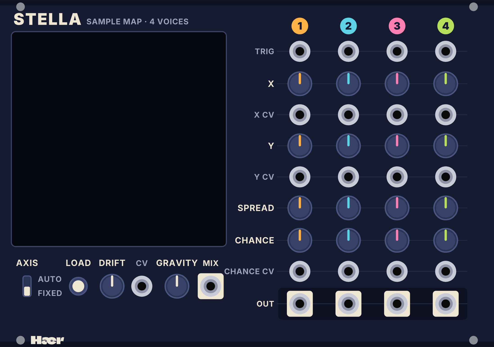

STELLA
Sample map player for VCV Rack · 36 HP · Hær

What it does
Point Stella at a folder of one-shots. It listens to every sample and lays them out on a map by how they sound, so kicks gather in one place, hats in another, and the in-between sounds sit between them. Each of the four voices has a point on the map. A trigger plays the sample nearest that point, or, if you turn up CHANCE, sometimes a neighbour inside its ring instead.
Getting started
- Press LOAD and choose a folder, or drag one or more folders (or any file in them) onto the module. All the dropped folders go onto one map. Hold shift while dropping to add them to the folders already loaded. The screen shows "analysing…" and then the dots. Up to 1000 WAV/AIFF files, subfolders included, each trimmed to 2 seconds.
- Patch a clock or gate pattern into voice 1 TRIG and the MIX out to your mixer.
- Turn X and Y, or just click and drag on the map: the nearest voice's crosshair follows the mouse, and the name of the sample under it shows at the bottom of the screen.
- Turn up CHANCE and SPREAD to let the voice wander among similar sounds.
Controls
| AXIS | AUTO: arranged by overall similarity across five measurements (brightness, noisiness, attack, length and low-end weight). FIXED: X is dark to bright, Y is short to long, the same for every folder. Flip it and the dots glide to their new places. |
| LOAD | Opens the folder chooser and replaces the map. The folders are saved with the patch and reloaded next time. |
| DRIFT + CV | Every voice's point wanders slowly around where you set it. Fully up, it roams a fair way in a few seconds; low settings take minutes. ±5 V on CV adds or removes 50%. |
| GRAVITY | Each hit pulls that voice's point a little towards the sample it just played, so a voice that strays to a neighbour tends to stay there for a while. With DRIFT and GRAVITY both at zero, the points spring back to the knobs. |
| TRIG | Plays a sample. A new hit fades the previous one out over 5 ms. |
| X, Y + CV | The voice's point. ±5 V of CV moves it across the whole map. |
| SPREAD | Size of the dashed ring around the crosshair. |
| CHANCE + CV | How often a sample inside the ring plays instead of the nearest one. Closer samples are more likely. At 0 the voice always plays the nearest sample. ±5 V CV adds or removes 50%. |
| OUT / MIX | Each voice has its own out. Patching it takes that voice out of MIX, as on the 727. |
Right-click menu: load a folder (replace), Add folder… (adds to the map), Remove folder, re-scan, include subfolders (on), even out sample levels (on: every sample is turned up to the same peak level).
Patch ideas
One folder, whole kit. Put voice 1 on the kicks, 2 on the snares, 3 on the hats and 4 on percussion. Drive them from Pam's or a drum sequencer. CHANCE around 20% with a small SPREAD gives you natural variation, like round robin.
Mutating hats (the Autechre side). Voice 3 on 16ths, CHANCE 60%, SPREAD 40%, DRIFT 30%, GRAVITY 50%. The hats find a pocket of similar sounds, stay a while, then slide to a new one.
Sequenced timbre. Patch a slow random or stepped CV (Marbles X, or Random8) into X CV. FIXED axes make it predictable: higher voltage means brighter samples.
Arrangement moves. Send a Long Form or LFO CV into CHANCE CV, near 0 in the verse and higher in the breakdown, so the kit gets looser as the track builds without changing the pattern.
Good to know
- Analysis runs in the background, so audio doesn't stop while a big folder loads. Around a few hundred samples takes a second or two.
- Samples are played mono at their own sample rate. Anything longer than 2 seconds is cut, with a short fade.
- On macOS, Rack may need permission to read the folder (System Settings › Privacy & Security › Files and Folders).